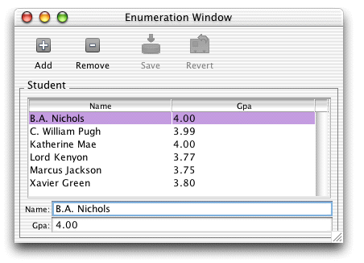

When you launch a Direct to Java Client application, the generation layer analyzes your EOModel and generates the user interface accordingly. Currently, your model and database have only a single table, and by default, Direct to Java Client displays a window to enumerate that table, as shown in Figure 3-15.
Figure 3-15 Default enumeration window
You can add, delete, and save records, as well as revert changes made since the last save. You can also rearrange the columns.
So far, you haven't written a single line of code, yet the Enterprise Object technology has provided the following for you:
Notice that only the attributes you marked as client-side
class properties are displayed in the client. studentID,
the entity's primary key, isn't displayed since it wasn't
marked as a client-side class property in the EOModel.
There is a significant problem with the GPA field.
You'll notice that decimal points are automatically truncated,
which is unacceptable when recording GPAs. This is due to that field's
data type: int (external)
and Integer (internal).
Since uncustomized Direct to Java Client user interfaces are contingent on the contents of their corresponding EOModels, you need to edit the EOModel to correct this problem.
Follow these steps to edit the EOModel:
Admissions.eomodeld which
is in the Resources group.gpa attribute
to float. You can do
this with the Inspector or in the table view. In the Inspector,
change the internal data type to Double. The
model should now resemble Figure 3-16.Figure 3-16 Revised model
Figure 3-17 Schema Synchronization window
![[image: ../Art/schemasynchronization.gif]](../Art/schemasynchronization.gif)
gpa attribute
changed. Do this by choosing the Admissions database and clicking
the Schema Design button to view the database's tables.Figure 3-18 Revised enumeration window
